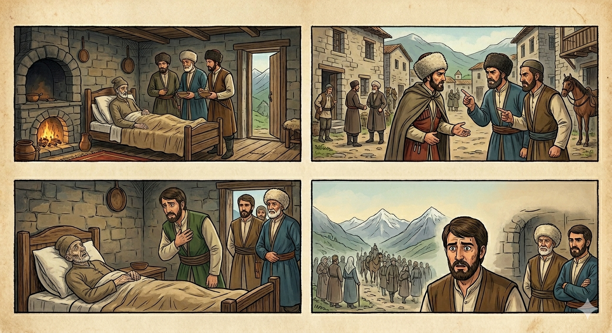

И.А. Дахкильгов. Хьехаме дувцарш - поучительные рассказы-притчи.
И.А. Дахкильгов. Хьехаме дувцарш - поучительные рассказы-притчи. Из ингушского фольклора.

Дагардар дист эккханза Ӏац
МоцагӀа цхьан унахочо метта уллаш дикка ха яьккха хиннай. Гаргара нах, бовзаш-безараш из волча зерате ухаш хиннаб. ХӀаьта цу унахочунца цхьан хана гӀулакх леладаь, цхьана тух-сискал диа хинна цхьа къонах цу йоккхача юкъа цӀаккха гучаваьнна хиннавац. Унахочоа цох боккха дега боалам хулаш хиннаб. Цу ца воагӀаш гаьнваьннача къонахчох наха бехк баьккхаб, хьай доттагӀа хала цамогаш волча гуча хӀана валац хьо, яхаш. ТӀеххьара вахав из зерате. Унахочо бехк баьккхаб цох: - Со волча гуча ца воалаш сона вовзаш-везаш болчарех цхьа саг висавац, хьо воацар. Укх йоккхача юкъа гуча ца валар фу бахьан дар хьа? - Даьллахьи, бехк ма баккхалахь сох, - аьннад цу зерате венача къонахчо, - хьо чӀоагӀа хала ва яхандаь хӀанз-хӀанз хьо лерг ма вий, велча, хӀета а хьаотта ма везий, яхаш, хӀанзолца гайнавар со хьо волча ца отташ. Иштта дагардар дист эккханза дисац.
РУССКИЙ
Потаенное всегда становится явным
Некий мужчина долго лежал прикованным к постели. Многие родственники и друзья навещали его. Но один давний товарищ больного, с которым вместе они съели немало хлеба-соли, за все это время ни разу не навестил его. Больной это тяжело переживал. Люди стали стыдить мужчину, не навещавшего больного: "Почему не навестил ты своего давнего товарища?" Устыдился мужчина и, наконец, пошел навестить больного. Тот укорил его: - Кроме тебя, все мои друзья, родственники, знакомые навестили меня. Почему же ты за столь длительное время ни разу меня не навестил? - Богом прошу извинить меня, - стал оправдываться мужчина, - говорили, что ты очень тяжел, и потому я полагал, что ты вот-вот помрешь, и мне все равно придется явиться на твои похороны. Вот так потаенные мысли становятся явными.
ENGLISH
What is hidden always comes to light
A certain man had been bedridden for a long time. Many relatives and friends came to visit him. But one of the patient's old friends, with whom he had shared many a meal, had not visited him even once during all that time. The patient took this very hard. People began to reproach the man for not visiting the patient: 'Why haven't you visited your old friend?' The man felt ashamed and finally went to see the patient. The patient reproached him: 'Apart from you, all my friends, relatives and acquaintances have visited me. Why haven't you visited me even once in all this time?' 'I beg your forgiveness,' the man began to make excuses, 'they said you were very ill, and so I thought you were about to die, and that I would have to attend your funeral anyway.' That is how hidden thoughts are revealed.
НОХЧИЙН
ПОГОВОРКИ